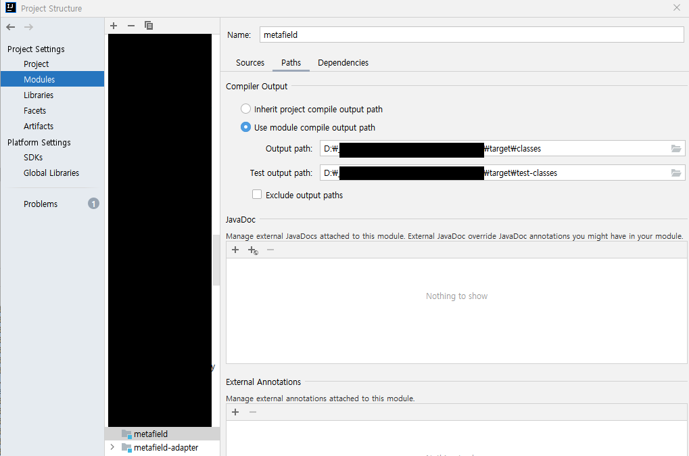

cannot be opened because it does not exist
2022, Mar 27
intellij
problems
인텔리제이에서 spring boot run하면 아래와 같은 오류발생
09:06:19.237 main ERROR o.s.b.SpringApplication :834 reportFailure Application run failed
org.springframework.beans.factory.BeanDefinitionStoreException:
Failed to parse configuration class [Application];
nested exception is java.io.FileNotFoundException: class path resource
[ExpireTokenAdapter.class] cannot be opened because it does not exist
at org.springframework.context.annotation.ConfigurationClassParser.parse(ConfigurationClassParser.java:189)
at org.springframework.context.annotation.ConfigurationClassPostProcessor.processConfigBeanDefinitions(ConfigurationClassPostProcessor.java:320)
at org.springframework.context.annotation.ConfigurationClassPostProcessor.postProcessBeanDefinitionRegistry(ConfigurationClassPostProcessor.java:237)
at org.springframework.context.support.PostProcessorRegistrationDelegate.invokeBeanDefinitionRegistryPostProcessors(PostProcessorRegistrationDelegate.java:280)
at org.springframework.context.support.PostProcessorRegistrationDelegate.invokeBeanFactoryPostProcessors(PostProcessorRegistrationDelegate.java:96)
at org.springframework.context.support.AbstractApplicationContext.invokeBeanFactoryPostProcessors(AbstractApplicationContext.java:707)
at org.springframework.context.support.AbstractApplicationContext.refresh(AbstractApplicationContext.java:533)
at org.springframework.boot.web.servlet.context.ServletWebServerApplicationContext.refresh(ServletWebServerApplicationContext.java:143)
at org.springframework.boot.SpringApplication.refresh(SpringApplication.java:755)
at org.springframework.boot.SpringApplication.refresh(SpringApplication.java:747)
at org.springframework.boot.SpringApplication.refreshContext(SpringApplication.java:402)
at org.springframework.boot.SpringApplication.run(SpringApplication.java:312)
at org.springframework.boot.SpringApplication.run(SpringApplication.java:1247)
at org.springframework.boot.SpringApplication.run(SpringApplication.java:1236)
at spectra.attic.talk.mocha.MochaApplication.main(MochaApplication.java:19)
at sun.reflect.NativeMethodAccessorImpl.invoke0(Native Method)
at sun.reflect.NativeMethodAccessorImpl.invoke(NativeMethodAccessorImpl.java:62)
at sun.reflect.DelegatingMethodAccessorImpl.invoke(DelegatingMethodAccessorImpl.java:43)
at java.lang.reflect.Method.invoke(Method.java:498)
at com.intellij.rt.execution.CommandLineWrapper.main(CommandLineWrapper.java:64)
Caused by: java.io.FileNotFoundException: class path resource [spectra/attic/talk/mocha/expiretoken/adapter/ExpireTokenAdapter.class] cannot be opened because it does not exist
at org.springframework.core.io.ClassPathResource.getInputStream(ClassPathResource.java:187)
at org.springframework.core.type.classreading.SimpleMetadataReader.getClassReader(SimpleMetadataReader.java:55)
at org.springframework.core.type.classreading.SimpleMetadataReader.<init>(SimpleMetadataReader.java:49)
at org.springframework.core.type.classreading.SimpleMetadataReaderFactory.getMetadataReader(SimpleMetadataReaderFactory.java:103)
at org.springframework.boot.type.classreading.ConcurrentReferenceCachingMetadataReaderFactory.createMetadataReader(ConcurrentReferenceCachingMetadataReaderFactory.java:86)
at org.springframework.boot.type.classreading.ConcurrentReferenceCachingMetadataReaderFactory.getMetadataReader(ConcurrentReferenceCachingMetadataReaderFactory.java:73)
at org.springframework.core.type.classreading.SimpleMetadataReaderFactory.getMetadataReader(SimpleMetadataReaderFactory.java:81)
at org.springframework.context.annotation.ConfigurationClassParser.asSourceClass(ConfigurationClassParser.java:696)
at org.springframework.context.annotation.ConfigurationClassParser$SourceClass.getInterfaces(ConfigurationClassParser.java:1024)
at org.springframework.context.annotation.ConfigurationClassParser.processInterfaces(ConfigurationClassParser.java:386)
at org.springframework.context.annotation.ConfigurationClassParser.doProcessConfigurationClass(ConfigurationClassParser.java:332)
at org.springframework.context.annotation.ConfigurationClassParser.processConfigurationClass(ConfigurationClassParser.java:250)
at org.springframework.context.annotation.ConfigurationClassParser.parse(ConfigurationClassParser.java:199)
at org.springframework.context.annotation.ConfigurationClassParser.doProcessConfigurationClass(ConfigurationClassParser.java:304)
at org.springframework.context.annotation.ConfigurationClassParser.processConfigurationClass(ConfigurationClassParser.java:250)
at org.springframework.context.annotation.ConfigurationClassParser.parse(ConfigurationClassParser.java:207)
at org.springframework.context.annotation.ConfigurationClassParser.parse(ConfigurationClassParser.java:175)
... 19 common frames omitted
Process finished with exit code 1

try 1
절케해도 안되서
전체 maven get했는데
java.lang.OutOfMemoryError: GC overhead limit exceeded 이렇게 오류나ㅓ 메모리 옵션 -xms1024m -xmx2048m으로 늘리고 다시 시도
그래도 에러나는 모듈있어서
에러나는 모듈은 폴더자체 rebuild해주고 다시 재시작하니까 된다
그래도 다음날 계속 소스를 pull받다보니 이미 존재하는 class파일인데 cannot find오류가 나서
springboot 시작전에 before build하는 옵션을 제거하고
solution
수동 build하는 것으로 바꾸니 잘된다.
에러도 없고 오히려 이게 빠른것 같다.
수동 build는 인텔리제이 [Build > Build Project] 실행